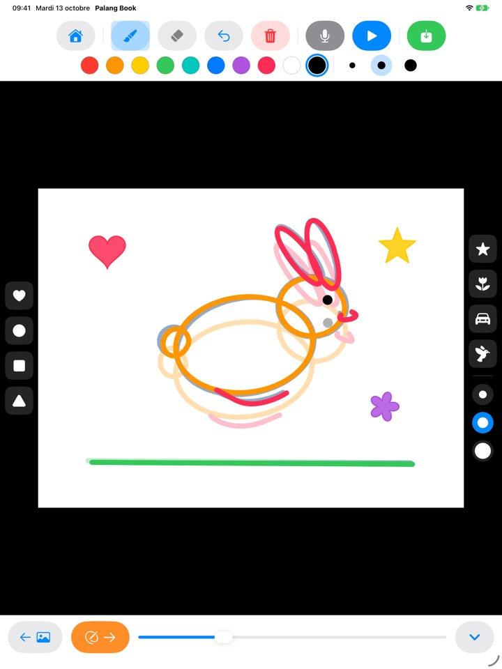
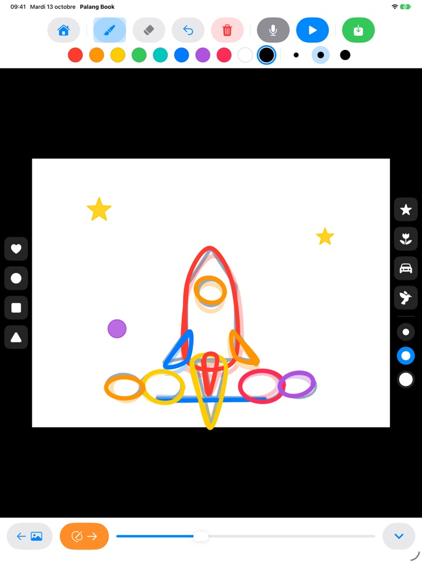
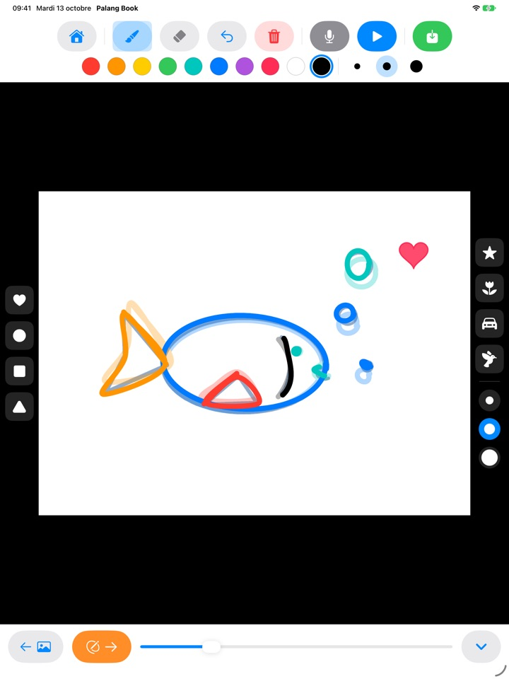
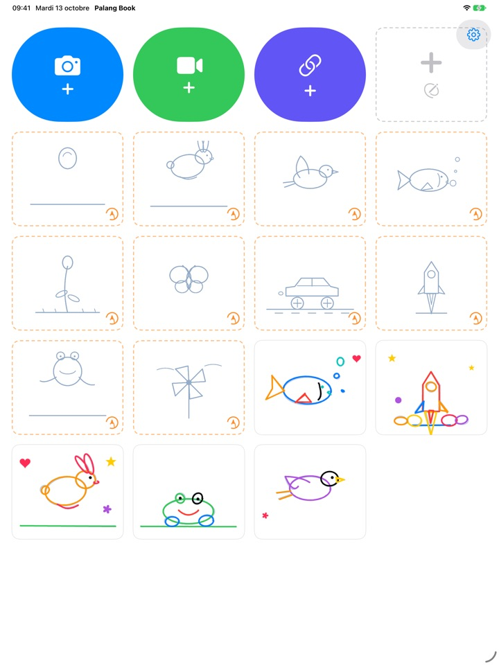

Un trait suivi,
un dessin qui bouge
Votre enfant décalque un modèle léger, une page à la fois. Il appuie sur lecture, le modèle s’efface et il ne reste que ses propres traits, qui s’animent. Tous les boutons sont des images : il se débrouille seul, même avant de savoir lire.
Pour iPad. 3 modèles à décalquer sont gratuits.

Dessinez quelques pages
Dessinez quelque chose, puis touchez la flèche orange pour passer à la page suivante. La page précédente apparaît en transparence. Après deux ou trois pages, touchez le bouton bleu de lecture.
Dommage qu’un si joli dessin reste immobile, non ?
Pour faire une animation, il faut redessiner presque la même image encore et encore, avec de petits changements. Seul, un enfant ne sait pas par où commencer. Palang Book glisse dessous un modèle léger qui contient déjà le mouvement : il suffit de suivre le trait. Dès qu’il appuie sur lecture, son dessin bouge.
On suit le trait, et ça s’anime
Une balle qui rebondit, un lapin qui saute, un oiseau qui vole, un poisson qui nage, une fleur qui s’ouvre, un papillon, une voiture qui file, une fusée, une grenouille et un moulin à vent. Chaque modèle compte une vingtaine de pages.
La page précédente apparaît en transparence pour enchaîner facilement, et à la lecture le modèle s’efface pour ne laisser bouger que le dessin de votre enfant.

Des tampons et dix couleurs
Cœur, rond, carré, triangle, étoile, fleur, voiture et oiseau : il suffit de toucher pour tamponner. Tampons et pinceaux existent chacun en trois tailles, avec dix couleurs au choix.
La gomme et l’annulation rattrapent les erreurs en un instant. On dessine au doigt ou avec l’Apple Pencil.

Sur vos propres vidéos, ou sur une page blanche
Importez une vidéo que vous avez filmée ou une vidéo de l’app Photos, et décalquez par-dessus. En masquant le fond, seules les scènes dessinées s’enchaînent sur une feuille blanche. Il existe aussi un folioscope vierge, sans aucun modèle.
Touchez le micro pour enregistrer la voix de votre enfant avec l’animation, puis enregistrez l’œuvre terminée en vidéo dans Photos pour la partager en famille.

Trois étapes pour commencer
- 1
Touchez une carte modèle
Les cartes à bordure orange en pointillés, sur l’écran d’accueil, sont les modèles à décalquer.
- 2
Dessinez, puis tournez la page
La flèche orange mène à la page suivante.
- 3
Touchez lecture
Touchez le bouton bleu de lecture et le dessin s’anime.
À quoi servent les boutons
- Carte orange en pointillés
- Commencer un modèle à décalquer
- Carte grise en pointillés
- Folioscope vierge
- Caméra bleue
- Dessiner sur une vidéo que vous filmez
- Vidéo verte
- Importer une vidéo depuis Photos
- Lien indigo
- Coller le lien d’un fichier vidéo
- Flèche orange
- Page suivante
- Lecture bleue
- Lire l’animation, toucher à nouveau pour arrêter
- Flèche courbe
- Annuler le dernier trait
- Corbeille rouge
- Effacer toute la page (Annuler la récupère)
- Micro
- Enregistrer une voix pendant que l’animation tourne en boucle
- Icône vidéo
- Masquer le fond vidéo (rayures roses : dessins seuls)
- Enregistrer vert
- Enregistrer en vidéo dans Photos
Pour supprimer une œuvre, maintenez le doigt sur sa carte dans l’écran d’accueil. Ses dessins, son enregistrement et la vidéo importée sont supprimés avec elle.
De quoi bien essayer gratuitement. L’Accès à vie si vous l’adoptez.
Gratuit
- 3 modèles à décalquer (balle, lapin, fleur)
- 3 œuvres conservées
- 1 vidéo importée
- Folioscopes vierges jusqu’à 10 pages
- Enregistrement vocal jusqu’à 15 secondes
- Tampons, couleurs, pinceaux et enregistrement dans Photos
Accès à vie
- Tous les modèles à décalquer, y compris les prochains
- Œuvres, pages, vidéos et temps d’enregistrement illimités
- Plus de carte Palang Book à la fin des vidéos
Un achat unique, pas un abonnement. Compatible avec le Partage familial, sur tous les iPad de la famille.
Les vidéos enregistrées gratuitement se terminent par une courte carte Palang Book. Si vous utilisiez Palang Book avant l’arrivée de l’Accès à vie, tout est déjà débloqué pour vous.
Questions fréquentes
Comment fonctionnent les modèles ?
Les lignes bleu ciel très claires forment le modèle. Votre enfant les décalque et, quand vous appuyez sur lecture, le modèle s’efface et seuls ses traits bougent. Une vingtaine de pages plus tard, l’animation est terminée.
Je voudrais lire et enregistrer seulement le dessin, sans la vidéo.
Dans un projet vidéo, touchez l’icône vidéo de la barre d’outils du haut pour qu’elle devienne rose à rayures. La lecture et l’enregistrement n’affichent alors que le dessin sur fond blanc. Seules les scènes dessinées sont lues : quelques dessins sur une longue vidéo suffisent pour une courte animation.
Où va la vidéo terminée ?
Touchez le bouton vert d’enregistrement, tout à droite de la barre d’outils : une vidéo mp4 est enregistrée dans Photos. La première fois, autorisez l’accès à vos photos.
Comment ajouter une voix ?
Touchez le bouton du micro pour enregistrer pendant que l’animation tourne en boucle, puis touchez arrêter pour terminer. Un nouvel enregistrement remplace l’ancien. La voix est incluse quand vous enregistrez la vidéo.
Un lien vidéo ne s’ouvre pas.
Vérifiez votre connexion internet et assurez-vous que l’adresse mène directement à un fichier vidéo (se terminant par .mp4 ou similaire). Les liens vers des pages de sites de partage de vidéos ne peuvent pas être ouverts. Merci d’utiliser des vidéos que vous avez filmées ou libres de droits.
La paume de la main laisse des traits.
La flèche courbe supprime le dernier trait, et la corbeille rouge efface toute la page (Annuler la récupère). Si cela arrive souvent, écrivez-nous, nous vous aiderons.
Pourquoi un calcul avant l’écran d’achat ?
Pour que les enfants n’arrivent pas seuls sur l’écran d’achat. Quand un enfant touche un élément verrouillé, un grand cadenas apparaît avec le message « Montre ça à un adulte », et l’écran d’achat ne s’ouvre qu’une fois qu’un adulte a répondu à une multiplication.
Comment restaurer mon achat ?
Touchez la roue dentée en haut à droite de l’écran d’accueil, choisissez Accès à vie, répondez à la question pour les adultes, puis touchez Restaurer les achats. Vous devez être connecté avec le même compte Apple que lors de l’achat.
Comment envoyer un commentaire depuis l’app ?
Touchez la roue dentée sur l’écran d’accueil, puis Envoyer un commentaire. Vous pouvez joindre une capture d’écran et laisser votre nom et votre e-mail si vous souhaitez une réponse. Nous demandons que les commentaires soient envoyés par un parent.
Collectez-vous des données sur mon enfant ?
Non. Palang Book ne collecte aucune donnée personnelle, et les dessins et enregistrements restent sur votre iPad. Pour en savoir plus, consultez la Politique de confidentialité.
Une question ou un problème ? Écrivez à mizzking75@gmail.com. Nous répondons généralement sous 2 à 3 jours.